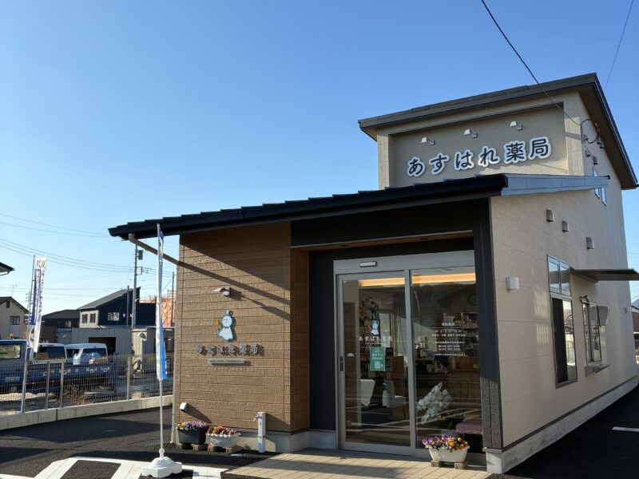

01
DRIVE-THROUGH
車から降りずに、
お薬を受け取れます。
お子さま連れの方、雨の日、体調がすぐれないときにも。 乗車したまま、スムーズにお薬をお渡しします。
ご利用方法を見るMISHIMA · SHIZUOKA
車に乗ったままお薬を受け取れる、
三島市のドライブスルー対応薬局です。
全国どちらの医療機関の処方箋も受け付けています

NEWS
営業時間やドライブスルーのご利用方法など、あすはれ薬局のご案内をまとめています。
OUR FEATURES
待ち時間も、移動の負担も、少し軽やかに。
暮らしに寄り添う薬局のかたちを整えました。
DRIVE-THROUGH
お子さま連れの方、雨の日、体調がすぐれないときにも。 乗車したまま、スムーズにお薬をお渡しします。
ご利用方法を見るFOR FAMILIES
キッズスペースと、おむつ交換台のある広々としたトイレを ご用意しています。
YOUR PHARMACIST
飲み合わせや健康のこと、在宅でのお薬管理まで。 どんな小さなことでもご相談ください。
SERVICE
処方箋調剤はもちろん、オンラインや在宅でも。 一人ひとりの暮らしに合わせて、安心できる方法をご案内します。
車に乗ったまま受け取り
お子さまと一緒でも安心
ご自宅でのお薬を支援
処方薬以外もお気軽に
電子処方箋に対応
スマートフォンで管理
来局が難しいときにも
カード・電子マネー・QR
HOW TO USE
事前に処方箋を送信しておくと、薬局での待ち時間を短縮できます。 お薬の準備状況によっては、お時間をいただく場合があります。 紙の処方箋の場合は、お受け取りの際に原本をお持ちください（電子処方箋の場合、紙の原本の持参は不要です）。
オンライン受付へスマートフォンで撮影して、来局前に送信します。
お薬の準備ができたら、車で専用窓口へ。紙の処方箋は原本をお持ちください。
薬剤師が確認し、お薬をお渡しします。
INFORMATION
ACCESS
WE ARE HERE FOR YOU